供養絵額；光岸寺
土淵にある光岸寺。
比較的新しい本堂に入ると、そこは普通のお寺で絵額は見当たらなかった。
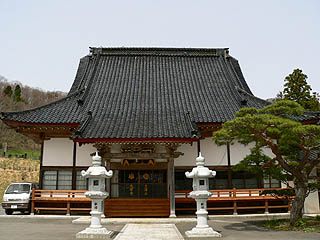
大黒さんに伺うと、本堂新築の際、掛けてあった絵額は片付けてしまい現在は公開していない。
で、わざわざ出して見せていただく事にした。お手数おかけしました。
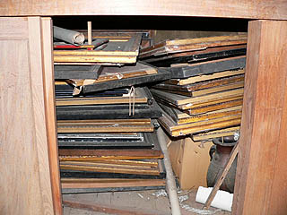
本堂奥の英霊殿という位牌堂のような部屋の棚に遺影や絵額がギッシリと詰まっていた。片付けたとはいえ無下に捨てられるものではないのでこうして保管してあるという。
ちなみに遺影のことは化真（けしん）と呼ぶそうだ。
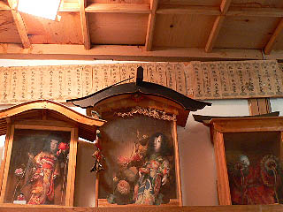 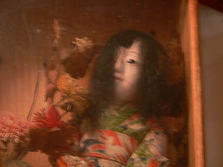
棚の上には供養人形が数体飾られていた。屋根付きのケースが珍しい。
また、ここでも昭和30年代頃まではくるくるポン、じゃなくて傘アゲモノを奉納していたそうだ。
で、絵額である。
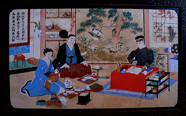
軍人さんの絵額である。読んでいるのは孫子の兵法書である。
戒名は3名。奉納時期や没年が記載されていないが男性の戒名には義、忠、烈の字が付いていたので戦死した人物かと思われる。
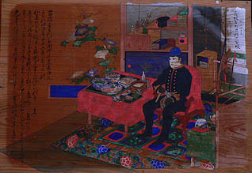
こちらは南西戦争に行ったという軍人の絵額。軍服が明治っぽいですね。
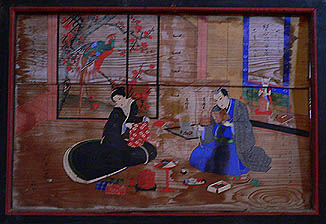
こちらは読書する男生と裁縫をする女性。床の間の二足で立っている兎が怖かった。
こちらの絵額は中央でバックリふたつに割れていたので棚から出すのにかなり緊張しました・・・
オシラサマも見せていただいた。
これは面倒を見られなくなったオシラサマをお寺で預かっているそうだ。
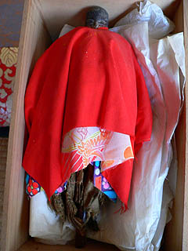 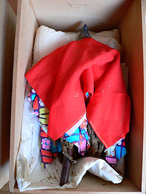
馬形のオシラサマに顔が描いてあるのは珍しいという事で、たまに見に来る人もいるそうだ。
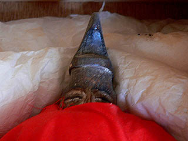
その後、大黒さんからこの寺にまつわる色々な話を伺った。
それは現代のお伽話とでもいうような話で、まるで遠野物語の世界に迷い込んだかのような不思議な時間だった。
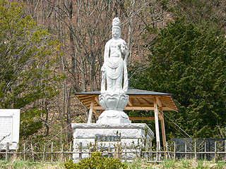
この寺は柳田国男に遠野の民話を聞かせたという佐々木喜善の菩提寺でもある。本堂の裏手の墓地には観音像が建っていた。
長泉寺 常楽寺 西来院 喜清院 光岸寺⇒ 善明寺 瑞応院 柳玄寺
供養絵額トップページに戻る
珍寺大道場 HOME